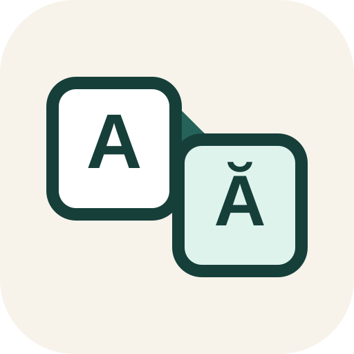

Creative Work

Vérba
A lightweight local-first language practice app.
Vérba is a small offline-friendly practice tool for vocabulary matching, text completion, and grammar forms. Language packs can be installed locally and used without an account or backend.
Vérba must be opened through a local web server. Run: node scripts/serve-site.mjs